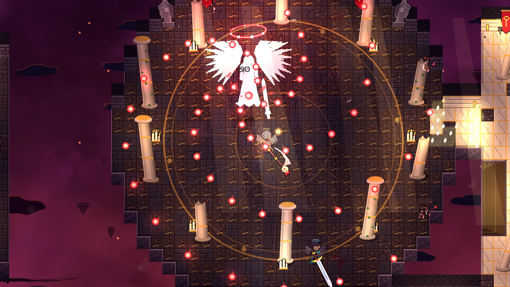
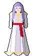
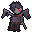
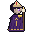
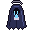
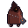
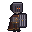

ESTRATO I
Vestíbulo de Ceniza
Celdas, capillas y cadenas que ya nadie sujeta. Aquí despiertas, y aquí aprendes a perder.

Seravel, Guardiana de las PuertasOtro Desplumado... ¿Cuántos más enviará la Voz antes de entender?

Hueco
Acólito
Plañidera
Penitente
Guardia